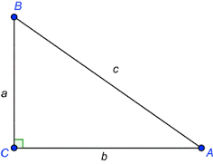

PRUEBAS SABER

Las preguntas 13 al 15 se responden con base en la siguiente información:
"Las razones trigonométricas me relacionan los lados en cualquier triángulo rectángulo con respecto a uno de sus ángulos agudos.

13. La razón trigonométrica sen B es
a. a/b
b. b/c
c. c/b
d. c/a
14. Si conocemos cuanto miden b y el ángulo A y necesitamos determinar el valor de c utilizamos la razón trigonométrica
a. Sen A
b. Cos A
c. Tan A
d. Sec A
15. Si conocemos cuanto miden c y el ángulo A y necesitamos determinar el valor de a utilizamos la razón trigonométrica
a. Sen A
b. Cos A
c. Tan A
d. Sec A